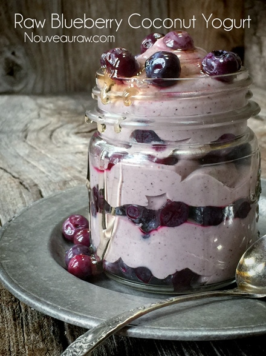

Berry Blue Blast Yo-Gurt-Sicle
 displayed on an old cake pan")
Today I made a raw, vegan, nut-free, gluten-free treat for some of our little friends… oh, who am I kidding, I made them for Bob and me. But it would also be excellent for the little ones!
These are perfect for those days when you are on the go or for those times where you are stuck to the couch. They can be stored in the fridge to be enjoyed on the softer side, or pop them in the freezer and enjoy a yo-gurt-sicle. Cool and refreshing!
I am a true yogurt lover. There were even times when it was one of my main foods, back when I was in my….
Dairy Daze
Growing up a bowl filled to the top with a fruity yogurt was a perfectly respectable meal for me. A pack of shredded cheese was a great snack. And don’t get me started on nachos–to me, they deserved to be in their own food group. If you’re picking up what I’m putting down, then you’re likely wondering why in tarnation I gave up dairy?
Well, when I used to eat dairy, I would get a lot of phlegm (mucus) in my throat. I also would break out all over my face. I didn’t suffer from severe acne, but just enough to play “connect the dots.” Sadly, I wasn’t in tune with my body, and I had no idea that it was manifesting such reactions in an attempt to get my attention. Surely by now, you know that our skin is the largest organ of the body, and we need to learn to listen to it. It is the body’s magic mirror, displaying imbalances that are occurring within.
I have now been dairy-free since 2008. There were a few snippets of time where I tried bringing it back into my diet… BUT nope, my body just wasn’t going to have it. Well, not unless I wanted to be a back-of-the-throat-mucus-dripping-pimple-faced-human. LOL Doesn’t sound pretty, does it?! If you still consume dairy products, try eliminating them from your diet for one month and see if you notice any shifts within your body. You might be surprised.
Well, it’s time for me to get busy outside weeding, so I will end this here. I hope you enjoy this simple, yet nutritious treat. Blessings, amie sue
Yields 2 cups
Yogurt:
- 2 cups (1 lb) fresh or frozen young Thai coconut meat (1-2 coconuts )
- 1/2 cup warm water
- 2 capsules probiotics
Add in:
- 1 cup organic blueberries
- 2 Tbsp raw honey or maple syrup
Preparation:
- First and foremost, make sure all of the utensils and pieces of equipment you use for culturing are sterilized to avoid growing bad bacteria. If at any time mold develops–fuzzy, black, or pink–it will need to be tossed.
- Place the coconut meat, water, and probiotic powder in the blender and blend until smooth.
- Ferment in a glass container, with a loose lid or rubber band and paper towel over the top, for 24-48 hours.
- Taste test throughout the process so you can stop it exactly when it reaches the level of “tang” that you enjoy.
- When the yogurt is ready, blend with the blueberries and sweetener.
- I like to use liquid NuNaturals stevia.
- Pipe the yogurt into the popsicle bags. Be sure to work out any air pockets.
- Store the fridge for 5 days or in the freezer for one month.
If you don’t have time to make the popsicle bags… enjoy as is!

© AmieSue.com